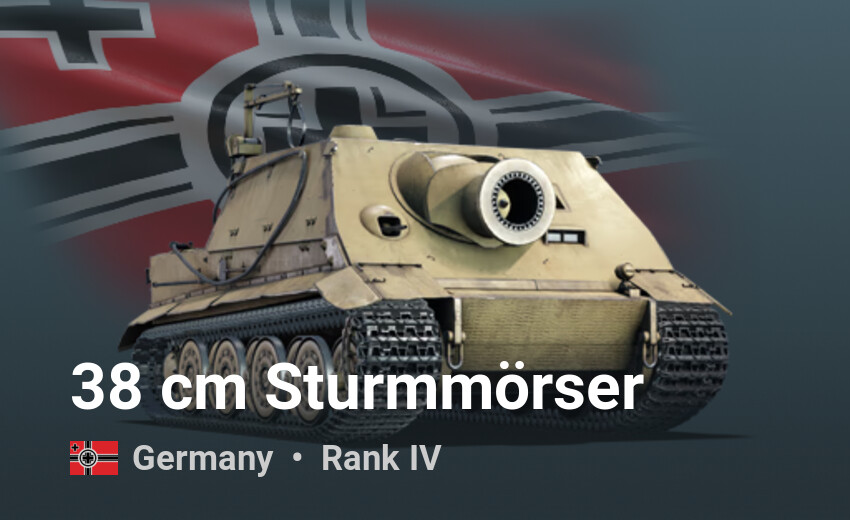

Losowe pojazdy yey

Panzerkampfwagen V Panther (Sd.Kfz.171) – niemiecki czołg średni z okresu II wojny światowej. Panther nie był jedynym podstawowym pojazdem niemieckich sił pancernych późnego okresu wojny. Rolę tę dzielił z PzKpfw IV (większość modeli PzKpfw IV wyposażona była w skuteczne działa 7,5 cm KwK 40 L/43 lub L/48, pozwalające na niszczenie radzieckich T-34-85), gdyż do końca wojny powstało zaledwie niecałe 6000 sztuk, co nie pozwalało na wymianę wszystkich Panzer IV. Czołg był produkowany w trzech wersjach – A, D i G. Najliczniej produkowana była wersja G, której od marca 1944 do stycznia 1945 wyprodukowano 3740 sztuk.
Dane techniczne
Masa całkowita:- Wersja D: 43 000 kg
- Wersja A i G: 44 800 kg
- Wersja F: 45 000 kg
Wymiary:- Długość: 8660 mm
- Szerokość: 3270 mm
- Wysokość: 2995 mm (wersja F: 2920 mm)
Napęd: 12-cylindrowy silnik benzynowy Maybach HL230 P30- Moc: 522 kW (700 KM)
Prędkość maksymalna:- W terenie: 24 km/h
- Na drodze: 46 km/h
- Wersja F: do 55 km/h (tylko 2 egzemplarze)
Zasięg:- W terenie: 100 km
- Na drodze: 250 km
Uzbrojenie:- Główne: armata 7,5 cm KwK 42 L/70 kal. 75 mm
- Prędkość wylotowa: 935 m/s (pociski PzGrW 35)
- Pod koniec wojny: do 1260 m/s
- Zapas amunicji: 79 szt. (D, A), 82 szt. (G)
- Dodatkowe: 2 karabiny maszynowe MG34 kal. 7,92 mm
- Zapas amunicji: 4200 naboi
- Główne: armata 7,5 cm KwK 42 L/70 kal. 75 mm
Opancerzenie:- Przód kadłuba: 65-80 mm
- Wieża:
- Przód: 100 mm (D, A), 100-120 mm (G)
- Boki i tył: 45 mm
- Boki kadłuba: 40 mm (D, A), 50 mm (G)
- Tył kadłuba: 40 mm
Załoga: 5 osób- Dowódca
- Działonowy
- Ładowniczy
- Kierowca
- Radiooperator-strzelec

Panzerkampfwagen VI Ausf. B Tiger II (Sd.Kfz.182), pot. Königstiger – niemiecki czołg ciężki, największy i najcięższy czołg II wojny światowej użyty w walce. Urząd Uzbrojenia Wojsk Lądowych we wrześniu 1943 roku rozpisał przetarg na czołg ciężki, który miałby zająć miejsce wozu PzKpfw. VI Tiger. Do przetargu stanęły dwie firmy: Henschel i Porsche. Projekty różniły się kształtem i grubością pancerza wieży. Przetarg wygrał Henschel i pierwsze prototypy wyprodukowano w ostatnim kwartale 1943 roku, produkcja seryjna w zakładach Henschla rozpoczęła się w styczniu 1944. Wczesne wersje miały wieże przez wielu błędnie zwane wersją „Porsche” (Krupp zaprojektował obydwie wieże). Ponieważ alianci wzmogli bombardowania miasta Kassel, w którym znajdowała się fabryka Henschla, wyprodukowano tylko 487 czołgów. Był to ostatni niemiecki czołg, produkowany seryjnie podczas II wojny światowej. Problemy produkcyjne były związane z licznymi atakami lotnictwa alianckiego oraz pośpieszną produkcją. Do jednostek Tygrysy II trafiały od lutego 1944.
Potocznie wobec tego czołgu stosowano określenie Königstiger, co w języku niemieckim w kontekście zoologicznym odnosi się do „tygrysa bengalskiego”. Powszechnie przyjęło się jednak dosłowne tłumaczenie tej nazwy jako „Tygrys Królewski” (ang. Royal Tiger, King Tiger, ros. Korolewskij Tigr).

Wiesel (niem. łasica) – niemiecki lekki gąsienicowy pojazd opracowany w latach 70. Od lat 90. znajduje szerokie zastosowanie w armii niemieckiej, która używa wielu jego odmian. Na początku lat 70. w Niemczech ogłoszono konkurs na nowy lekki wóz bojowy przeznaczony do wsparcia działań wojsk powietrznodesantowych. Za najlepszy został uznany projekt firmy Porsche, który zakładał zbudowanie lekkiego pojazdu gąsienicowego.

Leopard 2PL – polsko-niemiecki czołg podstawowy, powstały w wyniku modernizacji czołgów Leopard 2A4, przeprowadzonej we współpracy Rheinmetall oraz Polskiej Grupy Zbrojeniowej (PGZ). Leopard 2PL to czołg podstawowy III generacji, powstały w wyniku prowadzonej modernizacji czołgów Leopard 2A4, znajdujących się na wyposażeniu Wojsk Lądowych, przy współpracy firm Polskiej Grupy Zbrojeniowej i Rheinmetall Landsysteme. Czołg przeznaczony jest do opanowania i utrzymania terenu oraz wspierania ogniem z broni pokładowej działań pododdziałów zmechanizowanych i zmotoryzowanych w każdych warunkach atmosferycznych, zarówno w dzień, jak i w nocy.
Opis konstrukcji
Opis techniczny
Leopard 2PL to czołg podstawowy III generacji, powstały w wyniku prowadzonej modernizacji czołgów Leopard 2A4, znajdujących się na wyposażeniu Wojsk Lądowych, przy współpracy firm Polskiej Grupy Zbrojeniowej i Rheinmetall Landsysteme. Czołg przeznaczony jest do opanowania i utrzymania terenu oraz wspierania ogniem z broni pokładowej działań pododdziałów zmechanizowanych i zmotoryzowanych w każdych warunkach atmosferycznych, zarówno w dzień, jak i w nocy. W wyniku prowadzonych prac opracowane zostały dwie wersje pojazdów: standardowa Leopard 2PL, która dostarczana jest obecnie wojsku oraz Leopard 2PLM1, która powstała na mocy decyzji zamawiającego z 2018 roku. Za wykonanie prototypu wersji Leopard 2PLM1 jest odpowiedzialny partner niemiecki. Pojazd został dostarczony w styczniu 2021, zaś jego testy rozpoczęły się w lutym 2021. Różnice w konfiguracji czołgów w wersjach Leopard 2PL i Leopard 2PM1 polegają na wyposażeniu maszyn w wersji 2PLM1 w system aktywnego chłodzenia przedziału elektroniki EGPT, system zabezpieczający elektronikę wieży przed spadkiem napięcia podczas rozruchu, modyfikację trybów pracy dalmierza laserowego, dodatkowe gniazdo do ładowania akumulatorów oraz funkcję PIX, pozwalającą dowódcy na automatyczny obrót głowicy optoelektronicznej urządzenia obserwacyjno-celowniczego PERI na pozycję „godziny szóstej” i „dwunastej” względem kadłuba maszyny.
Opancerzenie
Modernizacja Leopardów 2A4 do standardu 2PL obejmuje wzmocnienie odporności balistycznej wieży do poziomu przewyższającego maszyny w wersji Leopard 2A5. Dookoła wieży pojazdu zamontowane są dodatkowe, zewnętrzne moduły pancerza. Nie zdecydowano się na dopancerzenie kadłuba i podwozia pojazdu z powodu znaczącego wzrostu masy oraz redukcji kosztów. Wewnątrz pojazdu zamontowano specjalne wykładziny przeciwodpryskowe, chroniące załogę wewnątrz pojazdu przed odpryskami i odłamkami pancerza w razie przebicia bądź trafienia.
Uzbrojenie
Podstawowym uzbrojeniem czołgu pozostała nadal armata gładkolufowa Rheinmetall Rh-120 w wersji L/44, którą poddano jednak modyfikacji w celu dostosowania do użytkowania nowych typów amunicji, tj. amunicji przeciwpancernej DM63 i programowalnej DM11. Wymieniono oporniki, powrotnik, wskaźnik odrzutu oraz pojemnik na dna łusek, w celu użycia amunicji DM11. Wprowadzono system programowania w zamku armaty oraz system kierowania ogniem i montaż elektronicznego spustu armaty. Zamontowano nowy komputer pokładowy z nowymi tabelami balistycznymi. Nie wymieniono jednak karabinów maszynowych MG3 na inny model. Wymieniono natomiast system stabilizacji armaty oraz napędów wieży z hydraulicznego na nowy wyłącznie elektryczny.
Optyka i systemy elektroniczne
Modernizacji poddano przyrządy obserwacyjno-celownicze działonowego oraz dowódcy poprzez dodanie polskich kamer termowizyjnych III generacji KLW-1 Asteria produkcji PCO. Poprawiono również świadomość kierowcy poprzez montaż dzienno-nocnej kamery cofania kierowcy KDN-1 Nyks również produkcji PCO. Zamontowano nowy pulpit dowódcy CCMS oraz zmodernizowano blok sterowania dowódcy i testowania RPP, który umożliwia zarządzanie systemami wieżowymi, testowanie działania systemów wieżowych, alternatywną transmisję obrazu ze zmodernizowanego celownika EMES 15 i przyrządu PERI R17A3L4 CP. Dodatkowo czołg po poddanej modernizacji zyskał możliwość pracy w trybie hunter-killer]. Zastosowano nową, cyfrową magistralę komunikacyjną. Nie wymieniono radiostacji na nowe, więc wozy dalej wyposażone są analogowe radiostacje SEM80/90, co jest przedmiotem krytyki przez specjalistów.
Inne zmiany
Generalnym remontom poddano jednostki napędowe czołgów, zamontowano pomocniczy zespół prądotwórczy (APU) o mocy 17 kW. Oprócz montażu wykładzin przeciwodłamkowych poprawiono bezpieczeństwo załogi poprzez zastosowanie układu przeciwwybuchowego z butlami ze środkiem gaśniczym Deugen-N i zmodernizowano układ przeciwpożarowy poprzez dodanie nowego pulpitu sterującego i butli ze środkiem gaśniczym. Zamontowano również dodatkowe kosze transportujące na zewnątrz wieży, jak też przystosowano wyposażenie ewakuacyjne do zwiększonej do 60 ton masy bojowej czołgu.
Honorable mention:
Tiger-Mörser, 38 cm RW61 auf Sturm (panzer) mörser Tiger, także Sturmmörser Tiger, bardziej znany jako Sturmtiger lub Sturmpanzer VI – niemiecka ciężka samobieżna artyleria rakietowa z okresu II wojny światowej zbudowane na podwoziu czołgu Panzerkampfwagen VI Tiger, uzbrojone w specjalny moździerz rakietowy 38cm SturmMörser RW61 L/5.4. Zaprojektowany został jako pojazd wsparcia piechoty w czasie walk ulicznych. Zbudowano zaledwie 18 pojazdów tego typu, wszystkie z nich powstały jako modyfikacja uszkodzonych w boju Tigerów.
Opis konstrukcji
Konstrukcja
Sturmtiger bazował na późnym modelu Tygrysa, zachowując jego podwozie i układ napędowy. Zmieniono przednią część kadłuba, gdzie zostało zamontowane nowe uzbrojenie. W porównaniu z normalnym Tygrysem, Sturmtiger był znacznie krótszy – Tygrys miał 8,45 m długości, a Sturmtiger 6,28 m, głównie dlatego, że nie miał on armaty wystającej daleko za kadłub. Był także trochę niższy – 2,85 m w porównaniu z 3 m wysokości Tygrysa.
Opancerzenie
Ponieważ Sturmtigery miały brać udział w walkach ulicznych, w bezpośredniej styczności z nieprzyjacielem, musiały być one bardzo grubo opancerzone, aby mieć szansę na przetrwanie. Jego przednie opancerzenie miało 150 mm grubości, a boczne 80 mm grubości. W porównaniu z normalnym Tygrysem pojazd ten był o 11 ton cięższy.
Uzbrojenie
Główne uzbrojenie pojazdu stanowił 380 mm Raketenwerfer 61 L/5.4, wyrzutnia rakietowa/moździerz ładowana odtylcowo, która wystrzeliwała naboje z napędem rakietowym na niewielkie odległości. Pociski miały około 1,5 m długości i zawierały ładunek wybuchowy o wadze 125 kg lub ładunek kumulacyjny do niszczenia fortyfikacji, będący w stanie spenetrować 2,5 m żelazobetonu.
Zasięg tej broni wynosił około 5600 metrów. Cały nabój ważył pomiędzy 345 a 350 kg. Wyrzucany był z lufy jak normalny granat moździerzowy z prędkością 45 m/s, a jeszcze w lufie włączał się dodatkowy silnik rakietowy, który przyspieszał pocisk do prędkości około 250 m/s.
Takie rozwiązanie tworzyło pewne problemy, gorące gazy z silnika rakietowego nie mogły oczywiście być wpuszczane do przedziału bojowego, gdzie znajdowała się załoga, a lufa nie byłaby w stanie wytrzymać spowodowanego przez nie ciśnienia, jeżeli nie byłyby one w jakiś sposób odprowadzone. Aby rozwiązać ten problem, przy nasadzie lufy dodano szereg specjalnych kanałów wentylacyjnych, których zadaniem było odprowadzenie gorących gazów, nadając jej charakterystyczny kształt.
Zapas amunicji wynosił tylko 14 nabojów – z powodu ich dużej wielkości i ciężaru. Jeden pocisk był od razu ładowany do lufy, drugi znajdował się na ładowniku, a reszta w specjalnych stojakach amunicyjnych. Aby pomóc z ładowaniem amunicji, z tyłu pojazdu umieszczono niewielki dźwig, ale nawet przy jego pomocy do załadowania amunicji potrzebna była cała pięcioosobowa załoga.
W tylnej części pojazdu znajdował się także 90 mm NbK 39 Nahverteidigungswaffe (broń bliskiej obrony) który używany był do obrony przed piechotą znajdująca się w bezpośredniej bliskości pojazdu, był to granatnik operowany z wewnątrz pojazdu, który mógł być wycelowany w dowolną stronę. Dodatkowo z przodu Sturmtigera znajdował się jeszcze karabin maszynowy MG34.